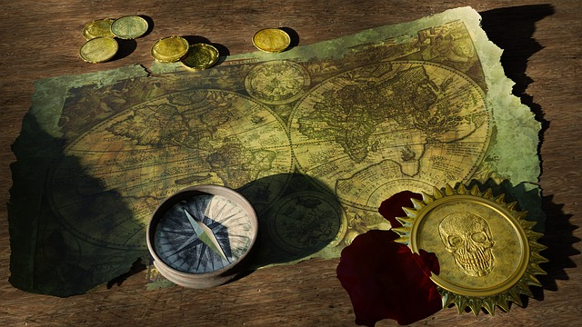

September 19th - International Talk Like a Pirate Day
Shiver Me Timbers!
Ahoy, mateys! September 19th be International Talk Like a Pirate Day. Are ye up t' th' task?
Follow th' rules below (they really be more like guidelines) 'n ye'll look 'n sound th' part o' a true pirate in no time.
Rule 1: Get ye some clothes (hat, eyepatch, pegleg, tattered shirt) so ye can look like ye belong on th' high seas. If ye wants t' really sell it, get a polly (a parrot if yer daft) as yer mate.
Rule 2: Time t' sound like a pirate. Learn some common pirate words like "ahoy", "booty", "scurvy", 'n more. Take a look at th' resources section if ye needs some help learnin' th' language.
Rule 3: Thar are no rules! 'ave fun wit' it - th' crazier ye act 'n sound th' better! Most important o' all - don't forget th' rum!
Booty Fit fer a Pirate
Resources
Needs a bit o' help learnin' how t' be a pirate? Check out some o' our fav'rit resources
Online Pirate Translator ← 'tis our fav'rit way t' turn a common phrase into somethin' a pirate would say. Go ahead 'n give it a try!
Pirate Clothes or More Pirate Clothes ← Use these sites t' purchase clothes or even jus' t' get ideas. Be creative wit' items ye might already 'ave in yer owns hold!
Pirate Accessories ← Finish off yer look wit' some o' these fine accessories.
Try yer hand at bein' a pirate wit' these fun games
Puzzle Pirates
Sail th' seven seas while ye stimulate yer brain at th' same time.
Variety of Pirate Games on CrazyGames
A pirate game t' suit every type o' gamer - check them out!
Seafight
Fer those lookin' fer a bit more realism in thar pirate gamin' experience.